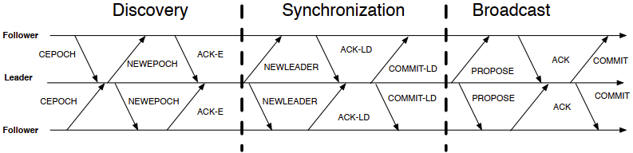
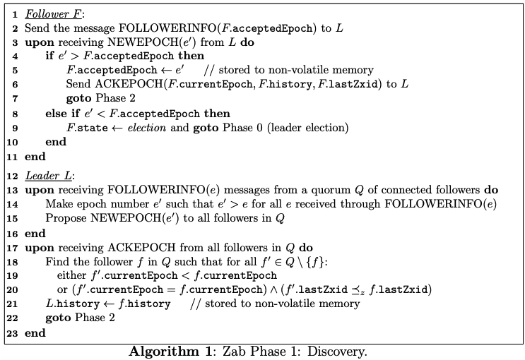
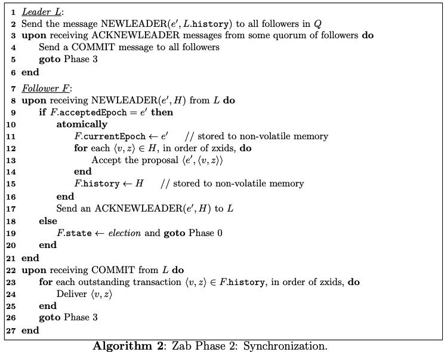
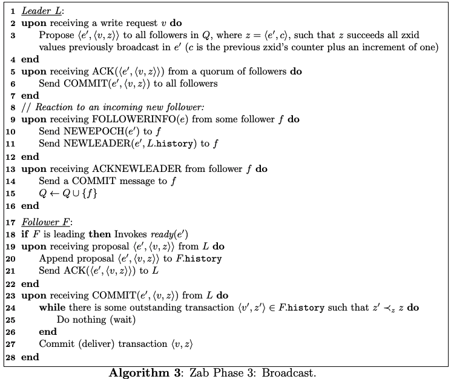
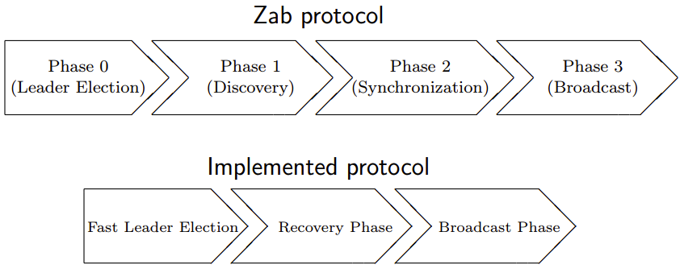
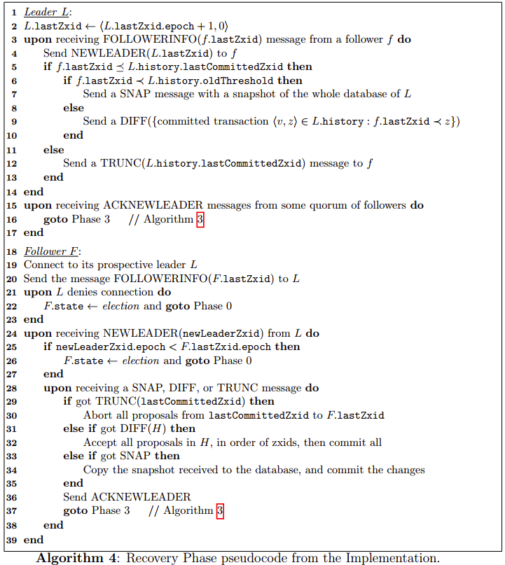
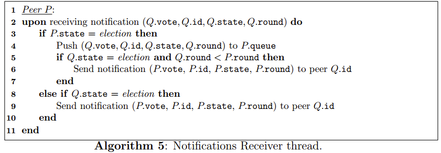
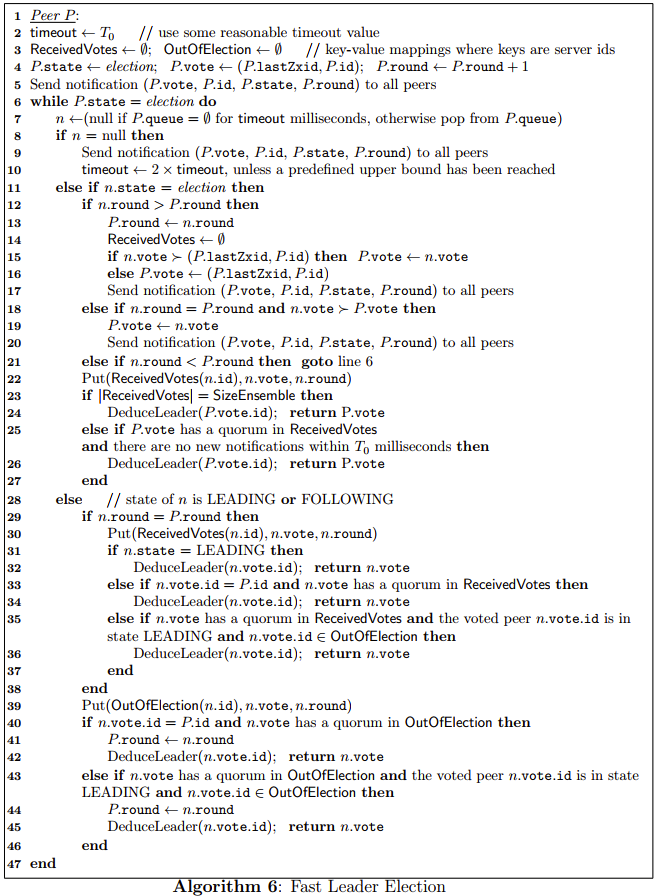

zab
Zap 详解
背景
Zab的论文难读的一批，写篇blog帮助自己理解。ZooKeeper是一个云计算协调服务，并为其他的应用提供基本的同步和集群服务。ZooKeeper的核心是一个原子广播协议，为节点提供选举，同步和leader广播功能。
Zab 实现条件
- 属性确保
Reliable delivery
If a message, m, is delivered by one server, it will be eventually delivered by all servers.
Total order
If a message is delivered before message b by one server, a will be delivered before b by all servers. If a and b are delivered messages, either a will be delivered before b or b will be delivered before a.
Causal order
If a message b is sent after a message a has been delivered by the sender of b, a must be ordered before b. If a sender sends c after sending b, c must be ordered after b.
- 一个集群的大部分节点都应该在正常运行状态
- 假如一个节点出现了崩溃情况，那么应该立刻重启
实现
为了保证高性能，ZooKeeper需要能处理多个未完成的状态变化的client请求。同时提交的操作根据FIFO顺序进行处理。相比之下，不能同时处理多个transaction。
附加的ZooKeeper性能需求：（a）低延时 （b）突发条件下的高可用性（c）平滑的错误处理
client可以从Zab的任意一个节点读取和写入数据
zixd 是实现 Total order 的关键，一个transation 的 zxid $z = <e, c>$，
e 是 epoch ，$e.epoch = e, z.counter = c$ 。$\langle e, c\rangle \prec_{z}\left\langle e^{\prime}, c^{\prime}\right\rangle$ 表明， $e<e^{\prime}$ or if $e=e^{\prime}$ and $c<c^{\prime} .$
− history: a log of transaction proposals accepted;
− acceptedEpoch: the epoch number of the last NEWEPOCH message accepted;
− currentEpoch: the epoch number of the last NEWLEADER message accepted;
− lastZxid: zxid of the last proposal in the history;
Zab使用的是一种类似二阶段提交协议的算法。Phase 0，每个节点都处于 state election，每个节点检查自身的票并决定是否转变为一个follower或leader。leader负载在Phase3协调其他节点并广播消息。而Phase 1和Phase 2对于状态一致和奔溃恢复非常重要。Phase的任何阶段出现超时和失败，都可以重新进行leader election。
协议的四个阶段：
- Phase 0: Leader election
- Phase 1: Discovery
- Phase 2: Synchronizaion
- Phase 3: Broadcast

Phase 0: Leader election: 节点初始阶段，即 state $election$。无需使用特定的选举算法，选举出leader后，将投票存储在本地的内存中。称之为 prospective leader，只有在Phase 3开始时，prospective leader才会有用。
Phase 1: Discovery:
follower与prospective leader通讯，leader 收集到最近follower接受到的transaction，以便建立新的epoch。
Phase 2: Synchronization: 该阶段决定了一部分的恢复协议，
leader将上一epoch的最新history复制给其他follower。当回复的follower到了一个法定投票数Q后，leader发送commit给follower。这时，leader可以称为established。
Phase 3: Broadcast:如果没有崩溃发生，节点无限期处于这个阶段。一旦ZooKeeper发出写请求，立刻执行事务广播。开始时，Q应该是一致的，且不会有多个
leader，同时也允许新的follower假如
处于 Phase 1-3的leader，需要不断接收来着follower的心跳，一旦一段时间内没有收到Q数量的心跳，则重新进入Phase 1阶段。
**Fast Leader Election (FLE)**是默认实现，它的实现和raft类似。是在Q数量的follower找到一个有最新
history的进程。这样Phase 1时，可以直接跳过。
恢复协议更像是Phase 2而不是Phase 1，Follower连接上leader发生最新的zxid给leader，然后leader决定如何同步该follower的
history。但是不同点在于，follower可以中止某些transaction在接收到TRUNC消息时，或者接收到DIFF消息后，接收来着leader的新提案。这个实现包含了一些之前没有的变量。

- Fast Leader Election:
- DeduceLeader(id): 推断并设置对方是FOLLOWING还是LEADING状态
- Put(Table(id), vote, round): Table的映射值为 key: $id$ -> (vote, round, version), version 是一个正整数 $i$ 表明当前是第几轮投票。 设 $(v, r, i)$ 是上一轮的
version值(初始化 $(v, r, i)=(\perp, \perp, \perp)$ ), version : $=1$ 假如 $r \neq$ round,则version : $=i+1$. - Notifications Receiver, 与协议并行的线程，主要接收其他节点Q的通知，并通过队列转发到FLE上，并将协议的有关投票情况转发到其他的Q节点上去。


Reference
ZooKeeper’s Atomic Broadcast Protocol: Theory and practice
Zab: High-performance broadcast for primary-backup systems